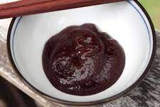
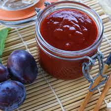

Spicy Plum Marinade
Author: Daniel Hendrych
Do you love meat combined with sweet sauces? Then you have to try the
marinade from plum and orange marmalade. There is also chill pepper in it, which
gives it a pleasant taset tip. Start grilling and impress your friends with new
flavors.
- Preparation time: 5 minutes
- Difficulty: easy
Ingredients (1 serving)
- 12 pieces of plum or jam
- 1 cup of orange juice
- 1 red chilli pepper
- 1/2 of orange marmalade


Procedure
- If we have fresh plums, finely chop them.
- Crush the pepper.
- Put everything in a pot, add orange juice and marmalade and cook slowly for about half an hour.
- Brush the meat with the marinade while grilling.